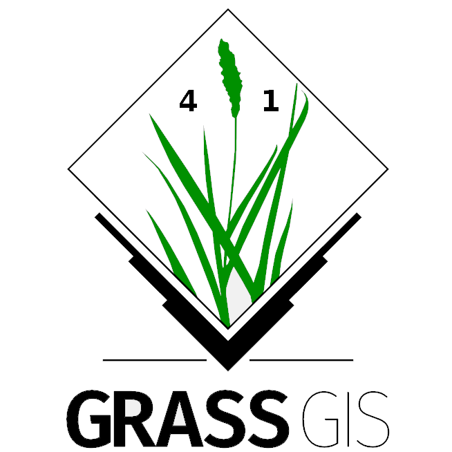
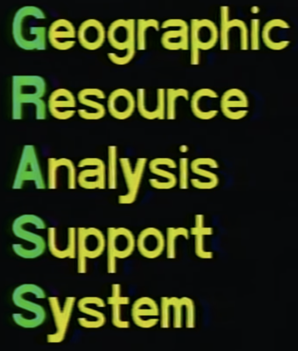

Evolution of GRASS GIS
FOSS4G NA 2024 - St. Louis, MO
https://github.com/HuidaeCho/grass-talks/
About the Presenter...
- Huidae Cho /hidɛ t͡ɕo/
- Associate Professor, Department of Civil Engineering, New Mexico State University
- Ph.D. in Civil Engineering, Texas A&M University
- Water Resources Engineer, Senior GIS Developer
- 16 years of ArcGIS development in C# and ongoing...
- A core developer of GRASS GIS since 2000
- A Project Steering Committee (PSC) member of GRASS GIS since 2021
What Is GRASS GIS?
- GRASS (Geographic Resources Analysis Support System) is a GPL 2+ GIS.
- Originally developed by the U.S. Army CERL for land management and environmental planning (1982-1995).
- Founding member of OSGeo (2006) 
- 41 years of continuous geospatial development

Brief History of Cross-Platform Support
- Born on July 29, 1983 (the 1st user manual published)
- Adopted the open-software philosophy from the beginning
- Initially supported UNIX only (X11 and Motif for XGRASS)
- TclTkGRASS added in GRASS 4.3 in November 1999
- winGRASS (first Windows support through Cygwin) and Mac OS X support in GRASS 5 in September 2002
- wxGUI and native support for Windows in GRASS 6.4 in September 2010


Current Windows Support
- Currently, uses MinGW-w64 for Windows support
- Requires libraries from OSGeo4W
- Everything in OSGeo4W except GRASS is built with Microsoft Visual C++ (MSVC)
So What's Wrong?
- Need two compilers:
- MSVC for OSGeo4W dependencies
- MinGW-w64 for GRASS
- Different C++ name mangling between MSVC and MinGW-w64
- e.g., MinGW-w64 cannot link C++ objects with OSGeo4W GDAL built with MSVC.
- Less native...
- We just want to use the native toolchain with MSVC!
MSVC Support
- Rashad Kanavath created PR 289 for Visual C++ compiler support in January 2020.
- Continuing as part of PR 3621
Current Build System

Modern and Cross-Platform Build System
- PR 3621 now supports
- Ongoing effort: CMake with MSVC for native Windows build
- Use MSVC from the free Visual Studio Community Edition.
- 13 contributors (* funded by NSF): Rashad Kanavath, Markus Neteler, Markus Metz, Anna Petrasova*, Martin Landa, Helmut Kudrnovsky, Vaclav Petras*, Huidae Cho*, Nicklas Larsson, Edouard Choinière, Loïc Bartoletti, Aaron Saw, Mahesh Maddineni*
GRASS GIS Conda Package
- Funded by NSF, we're currently working to
- Use CMake and dependency libraries from Conda for Linux and Windows.
- Create a GRASS GIS Conda package for Linux, macOS, and Windows.
- Relies on the MSVS support for Windows!
- Will allow for an easier deployment of GRASS GIS for Windows and High-Performance Computing (HPC) users.


Dataset Standardization
- NCSU, ASU, and NMSU teams created standardized datasets for regional areas: Nepal, Flagstaff (AZ), Las Cruces (NM)
- These datasets
- Are based on the Basic North Carolina Dataset v0.8 from May 2008.
- Help create localized tutorials.
GRASS GIS as a Geospatial Processing Engine
- GRASS GIS has its own GUI for desktop use.
- It also provides powerful features as a geospatial processing engine:
- Scalable parallel computing
- Integration with other systems for efficient geospatial computing
Parallel Computing

- 75 modules support parallel computing.
- 34 core modules: r.horizon, r.mfilter, r.neighbors, r.patch, r.proj, ...
- 41 addons: i.histo.match, i.segment.hierarchical, i.segment.stats, i.segment.uspo, i.sentinel.parallel.download, ...
Parallelizing Custom Python Scripts
- Data parallelization: GridModule
- Task parallelization: multiprocessing, ParallelModuleQueue

Jupyter Notebooks Integration


- grass.jupyter: Python library for easy and interactive visualization in Jupyter Notebooks
- New SeriesMap for animated raster/vector series in PR 3036
- FOSS4G NA 2023 workshop
R Integration
- R-GRASS: Interface between GRASS GIS and R
- R-GRASS workshop
By Roger Bivand, Rainer Krug, Robin Lovelace, Markus Neteler, Sebastian Jeworutzki, Floris Vanderhaeghe
QGIS Integration
- GRASS GIS integration with QGIS
- GRASS GIS provider: Allows QGIS users to run GRASS modules on non-GRASS data
- GRASS 8: Allows QGIS users to manage GRASS mapsets and run GRASS modules on them
Enables Scientists
- Scientifically peer-reviewed algorithms for open science
- References to related scientific papers since its inception
- References to papers associated with tools or libraries

Your Contributions Are Welcome!
- Join GitHub Discussions
- Suggest changes or report issues on GitHub
- Fix bugs via GitHub pull requests
- Create your own addon! See this nice workshop for a guideline: How to write a Python tool for GRASS
- Translate GRASS: We use OSGeo Weblate

Thanks for Your Attention!!